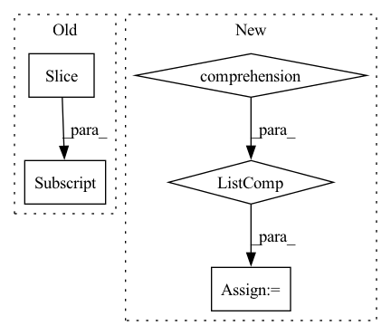

Pattern ID :19212
Before Change
split_point = int(len(base_tr_dataset) * (1 - self.val_split))
np.random.shuffle(idxs)
tr_subset = Subset(base_tr_dataset, idxs[:split_point] )
val_subset = Subset(base_tr_dataset, idxs[split_point:])
return tr_subset, val_subsetAfter Change
) for d in tqdm(self.datasets, desc="Loading LMDB datasets...")
])
val_dataset = torch.utils.data.ConcatDataset([
TensorpackLmdbImageDataset(
str(self._dataroot / d["tr_lmdb"]), **d, augmentation_fn=transform_val
) for d in tqdm(self.datasets, desc="Loading LMDB datasets...")
] )
// Performs train-validation split
split_point = int(len(tr_dataset) * (1 - self.val_split))In pattern: SUPERPATTERN
Frequency: 4
Non-data size: 5
Instances Fragment ID: 62440024
Project Name: microsoft/archai
Commit Name: d1dd0a59dc86ff271b12e111596b7cbefa2675d3
Time: 2022-12-16
Author: pierokauffmann@gmail.com
File Name: archai/datasets/providers/multi_lmdb_image_provider.py
M Class Name: MultiTensorpackLmdbImageProvider
N Class Name: MultiTensorpackLmdbImageProvider
M Method Name: get_train_val_datasets(3)
N Method Name: get_train_val_datasets(3)
M Parent Class: DatasetProvider
N Parent Class: DatasetProvider
M File Name: archai/datasets/providers/multi_lmdb_image_provider.py
N File Name: archai/datasets/providers/multi_lmdb_image_provider.py
M Start Line: 89
M End Line: 102
N Start Line: 89
N End Line: 113
Before Change
self.config.stacking * self.config.frame_shape[0],
self.config.frame_shape[0]
):
frame = x[batch_index, frame_index:frame_index + self.config.frame_shape[0]]
y[batch_index, frame_index:frame_index + self.config.frame_shape[0]] = standardize_image(frame)
x_start = y
After Change
return self.warm
def forward(self, x, action, target=None, epsilon=0.0):
x_start = torch.stack([standardize_frame(frame) for frame in x] )
x = torch.cat((x_start, self.internal_states), dim=1)
self.update_internal_states_early(x_start)
x = self.input_embedding(x) Fragment ID: 62440029
Project Name: thomas-schillaci/simple
Commit Name: 6faa32e29e1bb756ef80dc6999d6233b91e580db
Time: 2020-11-02
Author: thomas.schillaci@gmail.com
File Name: src/next_frame_predictor.py
M Class Name: NextFramePredictor
N Class Name: NextFramePredictor
M Method Name: forward(5)
N Method Name: forward(5)
M Parent Class: Container
N Parent Class: Container
M File Name: src/next_frame_predictor.py
N File Name: src/next_frame_predictor.py
M Start Line: 260
M End Line: 315
N Start Line: 317
N End Line: 363
Before Change
e_tup = next(it_tup, None)
// All triple notes with the same `n_tup` are added
if number == 134:
ic(lst[idx_tup_strt:] )
assert sum(len(tup) for tup in lst[idx_tup_strt:]) == len(elms_tup)
// if number == 134:
// exit(1)After Change
// Expect to be the same
if any(isinstance(n, Chord) for n in tup):
has_chord = True
opns = [tuple(n.notes) if isinstance(n, Chord) else (n,) for n in tup]
tups_new.extend(list(itertools.product(*opns)))
if has_chord: // Update prior triplet groups
lst = lst[:idx_tup_strt] + tups_new
Fragment ID: 62440033
Project Name: stefanheng/symbolic-music-generation
Commit Name: 7d2ebd5026f91738d46d1fc81d377d45420a5df8
Time: 2022-01-31
Author: 43276957+SpongeBobBang@users.noreply.github.com
File Name: musicnlp/preprocess/music_extractor.py
M Class Name: AnonimousClass
N Class Name: AnonimousClass
M Method Name: expand_bar(3)
N Method Name: expand_bar(3)
M Parent Class:
N Parent Class:
M File Name: musicnlp/preprocess/music_extractor.py
N File Name: musicnlp/preprocess/music_extractor.py
M Start Line: 44
M End Line: 116
N Start Line: 44
N End Line: 141
Before Change
for i in sampling_points:
fc_list = []
for _t in timeseries:
fc = corrcoef(_t[i:i+window_size] .T)
if not self_loop: fc -= torch.eye(fc.shape[0])
fc_list.append(fc)
dynamic_fc_list.append(torch.stack(fc_list))After Change
sampling_init = randrange(minibatch_timeseries.shape[1]-dynamic_length+1)
sampling_points = list(range(sampling_init, sampling_init+dynamic_length-window_size, window_stride))
minibatch_fc_list = [get_minibatch_fc(minibatch_timeseries, sampling_point, window_size, self_loop) for sampling_point in sampling_points]
dynamic_fc = torch.stack(minibatch_fc_list, dim=1)
return dynamic_fc, sampling_points
Fragment ID: 62440020
Project Name: egyptdj/stagin
Commit Name: 94aeea3f489d31eca5ddc1d4fe97d85777402c60
Time: 2023-04-10
Author: egyptdj@yonsei.ac.kr
File Name: util/bold.py
M Class Name: AnonimousClass
N Class Name: AnonimousClass
M Method Name: process_dynamic_fc(6)
N Method Name: process_dynamic_fc(6)
M Parent Class:
N Parent Class:
M File Name: util/bold.py
N File Name: util/bold.py
M Start Line: 21
M End Line: 31
N Start Line: 34
N End Line: 39